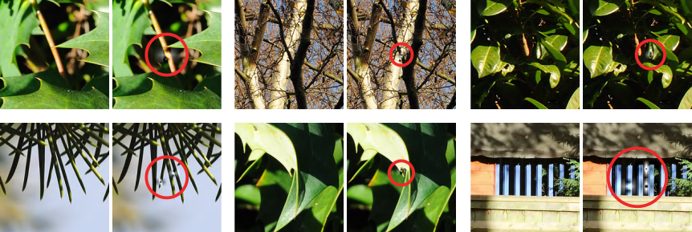

Codec debugging suggestions¶
The following sections provide suggestions for tackling some of the issues which can be found in encoders and decoders.
Encoder bitstream conformance issues¶
When validating an encoded bitstream with the vc2-bitstream-validator tool, conformance issues often relate to syntactic features of the bitstream format itself. Consequently, it can be useful to inspect the bitstream in a human-readable form using the vc2-bitstream-viewer tool.
Every conformance error message includes a ‘Suggested bitstream viewer commands’ section which provides a sample invocation of the vc2-bitstream-viewer command intended to display just the problematic region in the bitstream. See the vc2-bitstream-viewer documentation for a more detailed guide to the bitstream viewer.
In addition, error messages also provide a traceback of the pseudocode functions in the VC-2 specification which were running at the time of the error. It might be helpful to compare the logic in the relevant pseudocode functions side-by-side with the corresponding logic in an encoder when tracing an issue.
Decoder bitstream syntax issues¶
Many decoder test cases are designed to exercise specific syntactic features of the VC-2 bitstream. If a decoder is encountering difficulties with a test case, it might be helpful to use the vc2-bitstream-viewer tool to display a human-readable version of the test case bitstream.
The --hide slice argument can be used to suppress the printing of picture
slice data when this is not relevant. This dramatically reduces the quantity of
output produced by the tool.
The --offset <bit offset> argument can be used to display only the part of
a bitstream within a few bits of the specified bit (not byte) offset into the
file. This might be useful when you know where in a decoder had read up to when
it failed.
The --show <pseudocode function name> argument can be used to filter the
bitstream viewer output. This argument takes the name of a pseudocode function
in the VC-2 specification and shows only parts of the bitstream read by that
function.
The --show-internal-state argument causes the bitstream viewer to print (a
subset of) the contents of the state variable used by the VC-2 pseudocode.
This might be useful if a decoder appears to be correctly deserialising a
stream but is interpreting its meaning differently.
See the vc2-bitstream-viewer documentation for a complete guide to using this tool.
Signal range test cases¶
The decoder signal_range and
encoder signal_range test cases are
designed to result in large, near worst case, numerical values within a codec’s
wavelet transform. These tests are intended to determine if a codec has used
integers of sufficient size for their wavelet transform implementation.
If these test cases do not pass, it is likely that the codec being tested has used integers too small for the wavelet transform and picture bit depths in use. Try increasing the size of the integers used to hold intermediate wavelet transform values.
Typical symptoms of codecs with insufficiently large integers are the infrequent production of easily visible artefacts such as illustrated below:

Warning
It is extremely easy to under-estimate the size of integers required within a codec, and within decoders especially. In particular, the peak signal levels produced within a codec can differ by multiple orders of magnitude between different pictures. Even large suites of test material (whether pictures or noise) are unlikely to reach worst-case signal levels within every wavelet transform stage. Because peak levels vary so much between pictures, the possibility of encountering occasional near-worst case signals in production is actually relatively high.
The test signals used in these test cases are designed to achieve near worst case signal levels in every intermediate value of VC-2’s wavelet transform but true worst-case signal levels might be larger still. This limitation arises from a number of factors:
The full VC-2 encoder-decoder signal chain is a non-linear system and so it is not possible to directly compute worst-case inputs or signal levels. Instead, the test patterns in these test cases are derived from heuristics and so cannot guarantee worst-case behaviour.
The decoder test cases make some assumptions about encoder behaviours, since VC-2 does not specify an encoder design. Consequently it is possible that an encoder might produce outputs which yield higher worst-case signal levels.
These test signals assume the wavelet transform is carried out as outlined in the VC-2 pseudocode. Alternative implementations might have different worst-case characteristics.
For more in-depth information on codec integer bit width selection for VC-2
implementations, see the vc2_bit_widths package documentation.